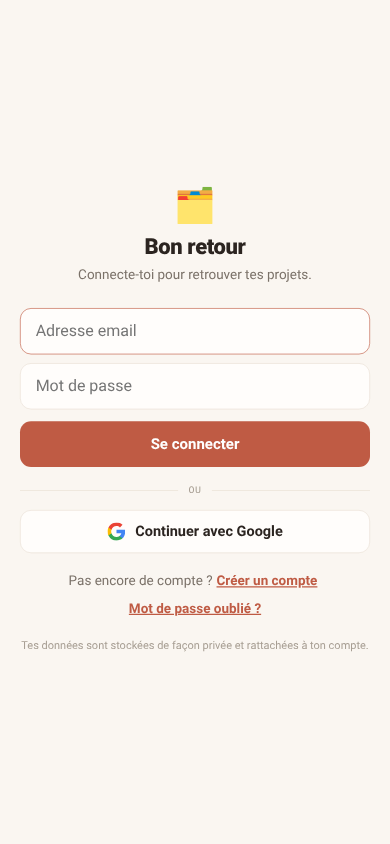
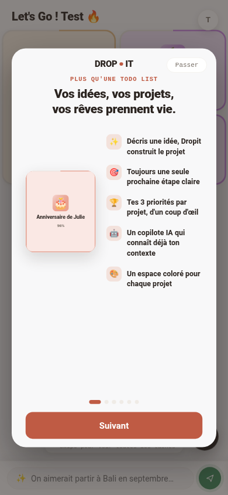
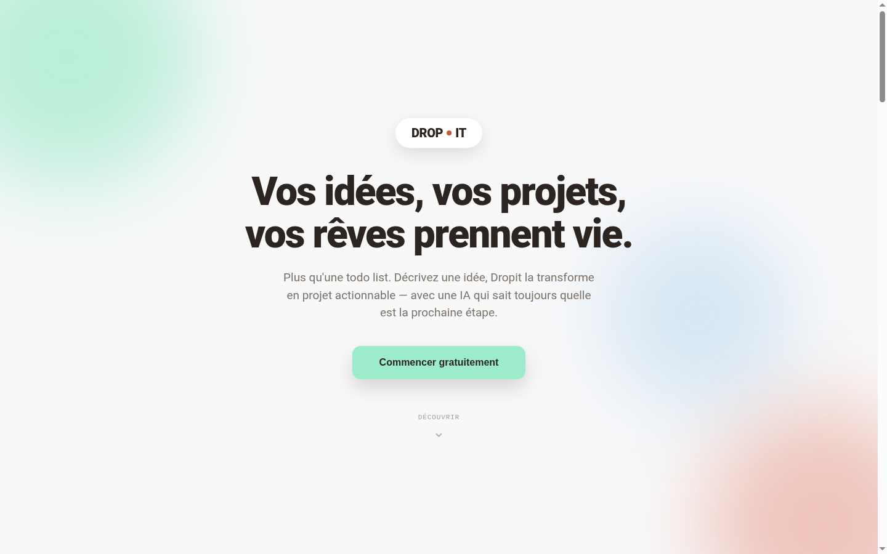
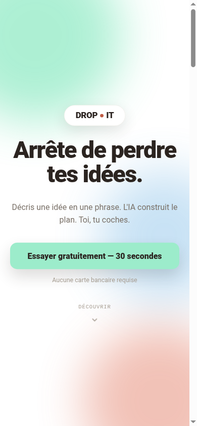
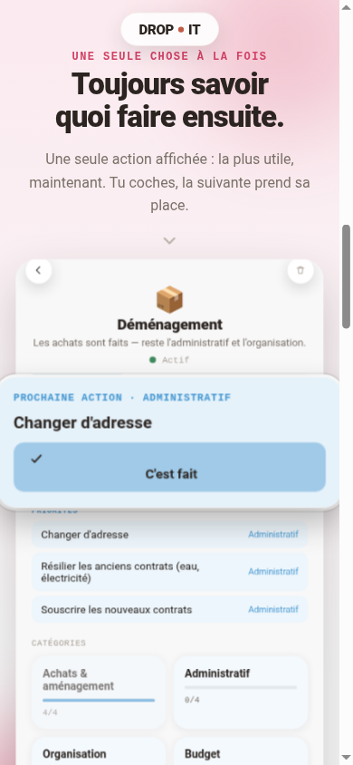

Une nuit, trois comptes, une fuite de données — trouvée et fermée avant le matin.
Narration
Une session, un onboarding livré, une landing page publique lancée — et au milieu, un message : "mes projets du premier compte sont visibles sur tous mes comptes". La faille a été trouvée, prouvée en base, corrigée et nettoyée en production le soir même.
D'abord, ce qui a été demandé au tout début de la nuit.
2026-09-05/06 · Claude Code · lecture ~6 min
La commande · 02
Le message qui a fait basculer la nuit.
NarrationAu milieu d'une session de design, ce message tombe — sans prévenir.
Message reçu
"je me suis connecté a plusieurs compte et mes projet du premier compte esr sur visible sur mon tous les compte cest pas possible cest quoi ce job"
Pas de panique, pas de supposition — direction le code, en direct.
L'enjeu · 03
Dropit n'est pas un outil perso. C'est une vraie app SaaS multi-tenant.
NarrationChaque compte doit être une bulle étanche : ses projets, à lui seul, jamais visibles par un autre. C'était déjà vérifié en direct plus tôt — jusqu'à ce message.
Terme à retenir
Multi-tenant
Une seule application sert tous les comptes, mais chacun ne doit voir que ses propres données — comme des appartements dans un même immeuble.
Mais avant la fuite, il y a eu tout le reste de la nuit.
La méthode · 04
Trois réflexes qui reviennent toute la nuit.
NarrationRien n'est déployé sans preuve — visuelle ou factuelle.
1 · Mockup avant réel
Toujours prototyper à part
Onboarding et landing construits en fichiers isolés
Testés en local (Playwright) avant d'être appliqués à l'app
2 · Contraste calculé
Jamais à l'œil
Formule WCAG relative luminance, en Python
5 essais de couleur de bouton, chacun vérifié
3 · Preuve avant conclusion
La base de données ne ment pas
Bug confirmé par une requête réelle, pas une supposition
Fix vérifié en rechargeant la vraie table ensuite
4 · Rollback propre
Identifiants jamais gardés
Clé Supabase utilisée le temps du nettoyage
Supprimée du poste juste après usage
Premier livrable de la nuit : l'accueil de tout nouveau compte.
Livrable 1 · Onboarding · 05
Le premier écran qu'un nouveau compte voit, jamais improvisé.
NarrationUne popup modale, six écrans, une couleur différente à chaque fois — construite après un premier retour "trop plein écran, pas assez popup".
Objectif
Montrer, pas décrire
Chaque écran reprend une vraie capture de l'app, recadrée sur l'élément qui compte — jamais une image générique.
Comment
Cutout agrandi
Chaque bouton clé (Suggérer, C'est fait, badge P1) ressort de son cadre, agrandi
Une couleur d'accent dédiée par écran
Ne s'affiche qu'une seule fois par compte (localStorage)
Avant

Après

Cette même technique de cutout va revenir plus tard, sur un tout autre écran.
Le grain de sable · 06
Le message tombe juste après le déploiement de l'onboarding.
NarrationPas de recherche à l'aveugle : le code contenait déjà l'explication, il fallait juste le lire au bon endroit.
1
Lecture du endpoint /api/projects
Une fonctionnalité de "reprise" existait : les projets créés avant la création d'un compte sont rattachés au premier compte qui se connecte, via un identifiant d'appareil (device_id).
2
Le vrai défaut
Cette ligne "en attente" n'était jamais supprimée après avoir été réclamée — un identifiant d'appareil est partagé par tous les comptes créés sur le même navigateur.
3
Vérification en base
Accès Supabase fourni par l'utilisateur : requête directe, 3 comptes trouvés avec les mêmes 13 projets, créés à 20 secondes d'écart pour deux d'entre eux.
Corrigé et nettoyé le soir même
La ligne est supprimée dès qu'elle est réclamée — plus jamais réutilisable. Les 2 comptes concernés remis à zéro en base, le compte légitime intact.
Ce fix a ouvert une question plus large : quoi d'autre pourrait casser à 1000 comptes ?
Livrable 2 · Audit · 07
Un audit complet, demandé dans la foulée — "pour 1000 utilisateurs pérennes".
NarrationLecture ligne par ligne du code serveur et client. Verdict : l'isolation de base tenait, mais trois failles auraient coûté cher à l'échelle.
Trouvé
3 failles majeures
/api/ai acceptait n'importe quel modèle IA, sans limite de coût
/api/projects sans plafond de taille
Sauvegarde perdue silencieusement à la fermeture d'un onglet
Corrigé le jour même
Les 3, avant la fin de la nuit
Liste blanche de modèles + plafond de tokens
500 Ko / 300 projets max par compte
Sauvegarde forcée à la fermeture (visibilitychange + keepalive)
Terme à retenir
keepalive
Option qui permet à une requête réseau de terminer son envoi même si l'onglet se ferme au même moment.
Dernier chantier de la nuit : la toute première page que voit un inconnu.
Livrable 3 · Landing page · 08
De "juste la promesse" à une vraie page publique, en six versions.
NarrationChaque retour a compté : "trop peu impactant", "les écrans sont tronqués", "enlève les gros emoji". La version finale sépare l'app (déplacée sur /app.html) de la nouvelle page publique.
Objectif
Convertir avant d'expliquer
Angle copywriting choisi parmi 3 profils proposés : conversion directe, bénéfices concrets, une seule promesse par écran.
Comment
Vraies captures, pas des illustrations
Mobile-first, sections quasi plein écran comme le hero
Cutout agrandi sur la carte "Prochaine action"
Redirection automatique vers l'app pour un compte déjà connecté
Version 1

Version finale

Et cette carte qui "ressort du cadre" — la voici en gros plan.
Le détail qui change tout · 09
Un bouton qui sort littéralement de l'écran — la même idée reprise deux fois.
NarrationLa technique du "cutout agrandi" mise au point sur l'onboarding a été redemandée telle quelle sur la landing page, pour la carte "Prochaine action".

Au final, ça donne quoi en chiffres qu'on peut vérifier ?
Les chiffres · 10
6h30. Pas une estimation — les horodatages des commits git.
NarrationDu premier commit de la soirée (branding, 20:25) au dernier ajustement de la landing (02:55).
6h30
de 20:25 à 02:55, en continu (horodatages git)
13
commits poussés en production
1
faille critique trouvée, prouvée et fermée le soir même
6
écrans d'onboarding livrés, un par fonctionnalité
Reste une question qui fâche : qui a vraiment fait quoi ?
Le partage des rôles · 11
Un message flou a suffi à déclencher toute l'enquête. Le reste, c'est de l'exécution.
NarrationChaque couleur, chaque titre, chaque recadrage vient d'un retour direct — souvent en une phrase dictée. La lecture du code, la preuve en base et le fix, c'est l'IA qui les a faits.
Toi
Signalé la fuite de données
Choisi l'angle copywriting et les couleurs
Fourni l'accès Supabase pour le nettoyage
Tranché chaque itération visuelle
L'IA
Lu le code, trouvé et prouvé la faille
Corrigé, testé, déployé les 3 failles de l'audit
Construit et itéré les 6 versions de la landing
Nettoyé les données en base, supprimé les accès après usage
~12 % toi · les décisions qui orientent~88 % IA · lecture, preuve, production
Concrètement, il te reste quoi à faire ?
Ta checklist · 12
Ce qui est fait. Ce qui dépend de toi maintenant.
Fait — Onboarding 6 écrans en ligne sur dropit-dbx.pages.dev/app.html
Fait — Fuite de données fermée, 2 comptes nettoyés en base
Fait — 3 failles de l'audit corrigées (AUDIT.md dans MISSIONS/2026-09-06-audit-securite/)
Fait — Landing page publique en ligne sur dropit-dbx.pages.dev
À toi — Vérifier ta limite de dépense Anthropic dans la console (jamais vérifiée à distance, pas d'accès)
À toi — Prioriser les points mineurs de l'audit : CSP, suppression de compte, conflit multi-appareils
Et là, le truc que personne ne te dit sur ce genre de bug.
Le vrai insight · 13
La faille n'était pas cachée. Elle était commentée dans le code, en français, depuis le début.
NarrationLe commentaire disait littéralement pourquoi la fonctionnalité existait — mais personne n'avait posé la question "et si elle est réclamée deux fois ?" avant qu'un vrai utilisateur ne le fasse à sa place.
Terme à retenir
Réclamation à usage unique
Une donnée transférée une fois doit être supprimée de sa source — sinon elle reste disponible pour être reprise par n'importe qui d'autre.
Retour au chiffre du début : 6h30, une fuite fermée dedans.
Dropit · le sujet · 14
6h30, 13 commits, 1 fuite fermée avant le matin — et une landing page pour accueillir le compte 1001.
NarrationL'onboarding et la landing sont en ligne, testés de bout en bout. La seule chose qui reste vraie pour la prochaine session : vérifier la limite de dépense Anthropic, seul point que personne n'a encore regardé.
Prochain épisode : rate limiting, suppression de compte, et la vraie synchronisation multi-appareils.